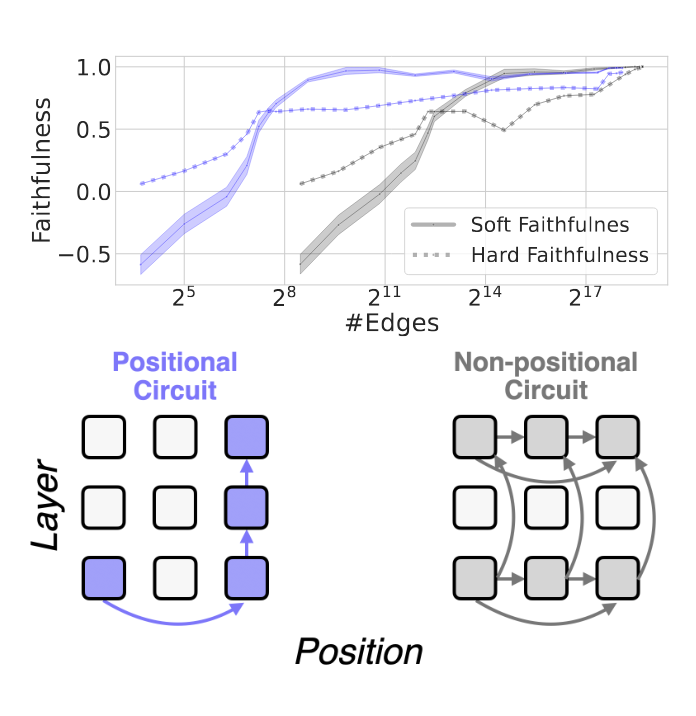
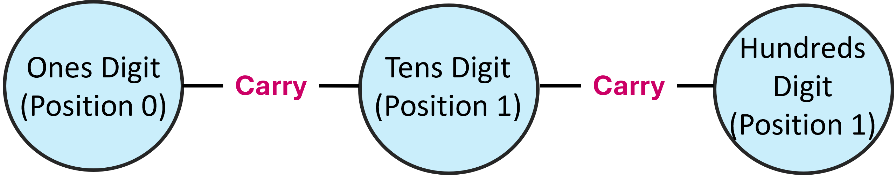
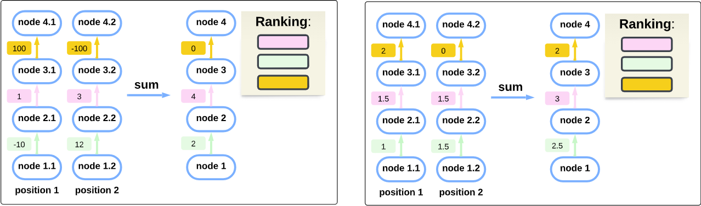
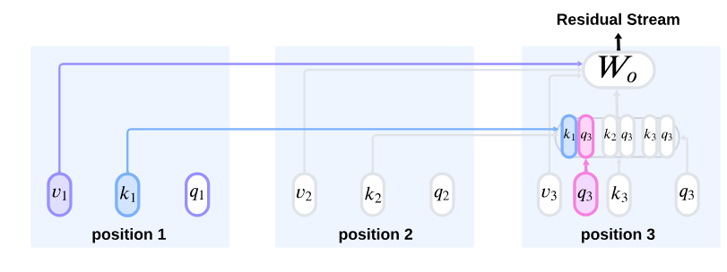
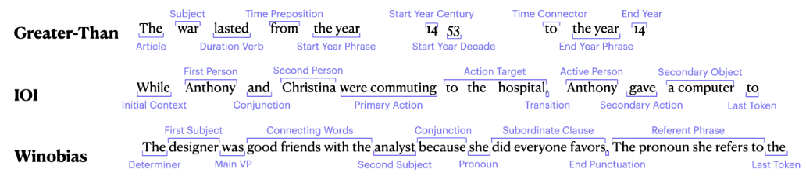
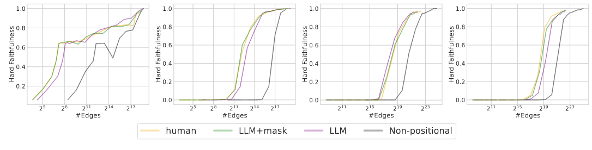

A widely used strategy to discover and understand language model mechanisms is circuit analysis. A circuit is a minimal subgraph of a model’s computation graph that executes a specific task. We identify a gap in existing circuit discovery methods: they assume circuits are position-invariant, treating model components as equally relevant across input positions. This limits their ability to capture cross-positional interactions or mechanisms that vary across positions. To address this gap, we propose two improvements to incorporate positionality into circuits, even on tasks containing variable-length examples. First, we extend edge attribution patching, a gradient-based method for circuit discovery, to differentiate between token positions. Second, we introduce the concept of a dataset schema, which defines token spans with similar semantics across examples, enabling position-aware circuit discovery in datasets with variable length examples. We additionally develop an automated pipeline for schema generation and application using large language models. Our approach enables fully automated discovery of position-sensitive circuits, yielding better trade-offs between circuit size and faithfulness compared to prior work.

Positional vs. non-positional circuits. In a non-positional circuit, the same edges must be included at all positions. A positional circuit can distinguish between the same edge at different positions. This specificity yields better trade-offs between circuit size and faithfulness. It can also increase both precision and recall.
Key Takeaways
Automatic discovery of position-aware circuits:We incorporate positional information into edge-attribution patching, enabling the automatic discovery of position-aware circuits.
Improved Circuit Discovery Efficiency:Position-aware circuits achieve a better balance between edge count and performance compared to non-positional circuits.
Automated Dataset Schemas:We introduce dataset schemas and develop an automated pipeline for schema generation, allowing circuit discovery on more diverse datasets.
Why positional circuits?
Imagine a transformer that performs simple arithmetic addition of two 3-digit numbers. When adding two multi-digit numbers, one key step is computing the carry from one digit to the next higher digit. This process is inherently position-specific:
Consider adding the ones digit (position 0) of both numbers. The sum here might produce a carry that affects the tens digit (position 1). The mechanism that computes the carry is designed to take the output from position 0 and specifically feed it into the computation at position 1.
The circuit implementing the carry operation has an edge that goes from position 0 to position 1. There’s no corresponding edge from position 0 directly to position 2 because the carry doesn’t skip over positions. Each connection is tailored to the relative positions of the digits.
If we assumed the same mechanism runs uniformly at every position (i.e., a single, position-agnostic circuit), we would miss the nuance that the carry computation only occurs between adjacent digits.

The circuit for computing the carry is designed with specific positional dependencies in mind.
Is summary, positions are an important aspect for describing a circuit in a model’s computational graph! A description of many mechanisms would not be complete if we ignore them.
Two key failures when ignoring positions
Cancellations across positions (low recall): If a component has both positive and negative scores at different positions, summing them may cancel out its overall effect, potentially reducing its score to near zero (see figure, left).
Importance overestimation (low precision): Methods that ignore position may prioritize edges with small impacts across many positions over those with significant impact in just a few (see figure, right).

Left: The yellow edge at position 1 has the highest score of 100, indicating it is the most important edge. However, aggregating across positions causes scores of opposite signs to cancel. This causes the yellow edge to be incorrectly ranked as the least important. Right: The yellow edge at position 1 has the highest score; the scores of other edges are consistently high (but lower) at many positions. After summing across positions, the non-yellow edges have higher scores. Thus, the yellow edge is incorrectly ranked as the least important.
We performed empirical experiments on GPT-2-small, finding evidence that these failure indeed occur when aggregating scores across positions in circuit discovery. These experiments are described in the paper (section 2).
Automatically Discovering Positional Circuits with Position-aware Edge Attribution Patching (PEAP)
We introduce Position-aware Edge Attribution Patching (PEAP), an extension of Edge Attribution Patching (EAP), which estimates the indirect effect of an edge on a target metric M. Standard EAP assumes that the nodes u and v of an edge (u, v) share the same position. However, to capture cross-position interactions in a circuit, attention edges spanning different positions must be considered.
In our paper, we define the necessary formulation to extend EAP to include these cross-position edges. This involves a specialized interventions for adjusting the contributions of k, q, and v across attention heads. The full formulation can be found in Section 3.

llustration of the attention mechanism from the perspective of position 3. We approximate how patching v1, k1 or q3 impacts the downstream metric via the output of the attention head at position 3.
Schemas: Dealing With Less-Templatic Datasets, Automatically
Discovering circuits involves aggregating edge scores across examples. However, naive aggregation assumes perfect positional alignment in the computation graph, which is rarely the case in real-world datasets. To address this, we introduce a more flexible approach: instead of strict positional alignment, we assume examples share a similar high-level structure, represented by a dataset schema.
A dataset schema identifies meaningful spans within input examples, based on semantic, syntactic, or other patterns. These spans replace individual tokens, treating each span as a single position. This shift enables the construction of more abstract, conceptual circuits rather than rigid structures tied to specific examples.

Example for schemas for each task.
In the paper, we propose an automated method for generating schemas using LLMs (Section 4), guided by saliency maps of the analyzed model. These maps help identify which tokens are important and which can be grouped into spans.
Results
Evaluating Faithfulness: We assess faithfulness by comparing the circuit’s performance—when all elements outside the circuit are ablated—to that of the full model. The figure below illustrates how faithfulness changes as a function of the number of edges included in the circuit.
Positional Circuits Offer Better Trade-offs: Positional circuits achieve a more efficient balance between circuit size and faithfulness. They maintain high faithfulness with significantly smaller circuit sizes compared to non-positional circuits.
Automated Circuit Discovery Matches Human Performance: Our automated LLM-based schema pipeline identifies circuits with faithfulness comparable to those discovered by human experts, even in tasks with variable-length inputs.

How to cite
bibliography
Hadas Orgad, Michael Toker, Zorik Gekhman, Roi Reichart, Idan Szpektor, Hadas Kotek, Yonatan Belinkov, “LLMs Know More Than They Show – On the Intrinsic Representation of LLM Hallucinations”.
bibtex
@misc{haklay2025positionawareautomaticcircuitdiscovery,
title={Position-aware Automatic Circuit Discovery},
author={Tal Haklay and Hadas Orgad and David Bau and Aaron Mueller and Yonatan Belinkov},
year={2025},
eprint={2502.04577},
archivePrefix={arXiv},
primaryClass={cs.LG},
url={https://arxiv.org/abs/2502.04577},
}